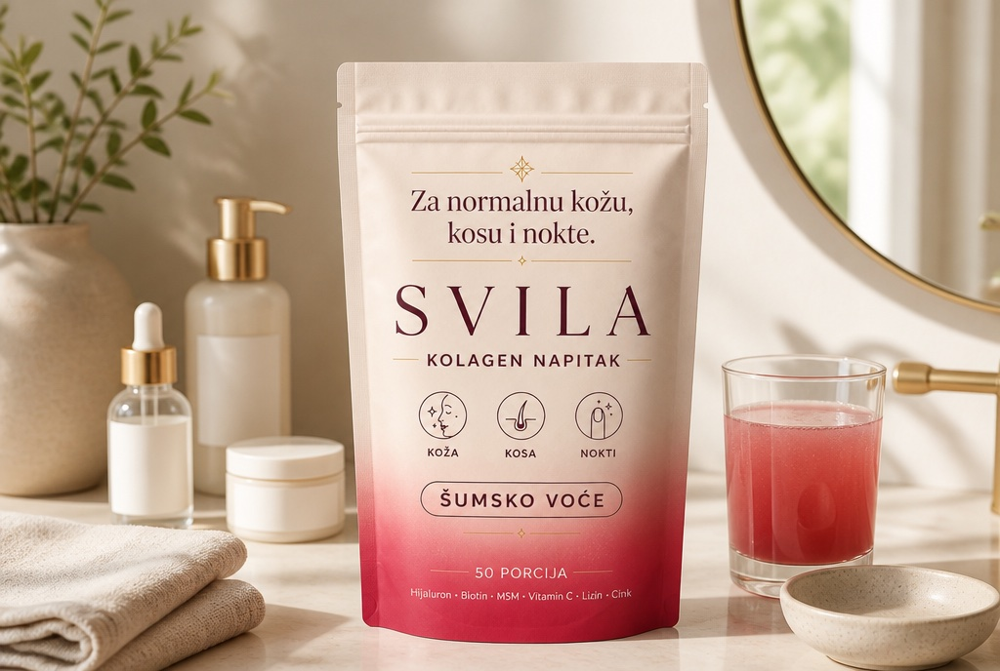
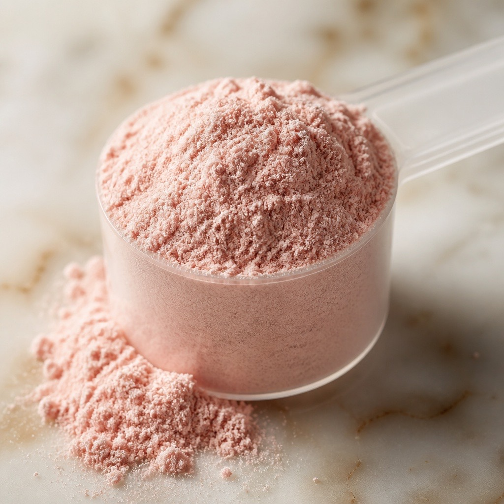
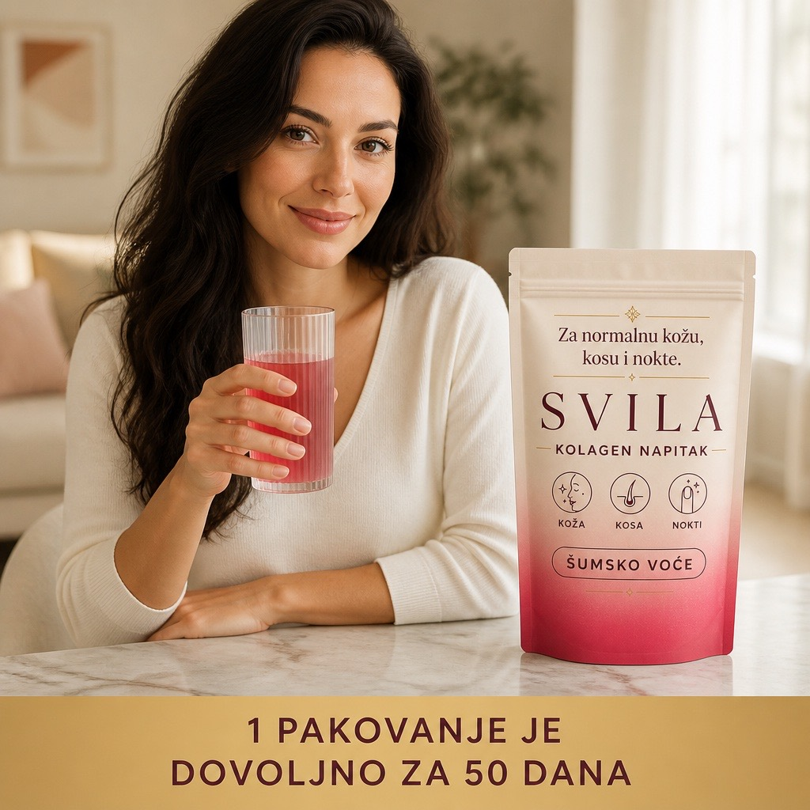

5 razloga zbog kojih se ovaj kolagen zapravo popije do kraja pakovanja
Većina kolagena ne propadne zato što ne valja — nego zato što se prestane piti već treće nedelje. Evo šta kod SVILE rešava baš taj problem.

Ako si već kupovala kolagen, verovatno znaš kako se to završi: prvo pakovanje se pije uredno, drugo malo ređe, a treće ostane u ormariću do isteka roka. Problem skoro nikad nije u odluci — nego u tome što se ritual raspadne.
Kada smo pravili SVILU, krenuli smo od tog dela: šta konkretno mora da bude tačno da bi se pakovanje popilo do kraja.
Ukus je šumsko voće, a ne želatin
Ovo je razlog broj jedan zbog kog se odustaje. Kolagen je protein životinjskog porekla i bez ozbiljne arome se to oseti — i u mirisu i u ustima.

SVILA ima ukus šumskog voća, bez dodatog šećera — zaslađeno steviol glikozidima. Može u vodu, u sok, u jogurt.
Rastvara se za dvadesetak sekundi, bez grudvica
Drugi razlog za odustajanje je gnjavaža. Ako moraš da tražiš mutilicu, pa da mešaš minut, pa da ispiraš talog sa dna — to je tri koraka previše za sedam ujutru.

Prah je aglomerisan, pa se rastvara običnom kašičicom, bez grudvica i bez taloga.
Jedna merica dnevno — 5 g, i to je sve
Merica je u pakovanju, doza je jedna, vreme je bilo kada. Nema rasporeda „dva ujutru, dva uveče uz obrok”, koji je sam po sebi razlog da se nešto zaboravi.

Piše tačno šta je unutra — i koliko
Ovde vredi biti precizan, jer se u ovoj kategoriji mnogo toga obećava. Za sam kolagen ne postoji nijedna odobrena zdravstvena tvrdnja i mi je nećemo izneti. Postoje odobrene tvrdnje za pojedine vitamine i minerale, i to samo ako ih ima najmanje 15% NRV po porciji. U SVILA porciji ih ima:
Vitamin C — 80 mg (100% NRV): doprinosi normalnom stvaranju kolagena za normalnu funkciju kože.†
Cink — 1,5 mg (15% NRV): doprinosi očuvanju normalne kože, kose i noktiju.†
Biotin — 7,5 µg (15% NRV): doprinosi očuvanju normalne kose i kože.†
| Aktivni sastojci | na 5 g | %NRV* |
|---|---|---|
| Hidrolizovani goveđi kolagen | 3,2 g | / |
| MSM (metilsulfonilmetan) | 500 mg | / |
| L-lizin | 200 mg | / |
| Natrijum-hijaluronat | 100 mg | / |
| Vitamin C | 80 mg | 100 |
| Cink | 1,5 mg | 15 |
| D-biotin | 7,5 µg | 15 |
*NRV — referentni unos za prosečnu odraslu osobu.
Jedno pakovanje pokriva 50 dana
50 porcija od 5 g, 250 g praha. Dovoljno dugo da rutina postane rutina, a ne eksperiment od dve nedelje.

BONUS — mali trik koji radi: ostavi pakovanje tamo gde ti je već rutina, pored aparata za kafu ili na kupatilskom pultu. Rituali se lakše kače na postojeće rituale nego na podsetnik u telefonu.
Šta kažu kupci
Probala sam ranije kolagen koji je mirisao na želatin i nisam mogla da ga popijem. Ovaj ima ukus šumskog voća i popijem ga bez razmišljanja.
Sipam mericu u čašu hladne vode, promešam kašičicom i za dvadesetak sekundi je bistro. Nema onog taloga na dnu.
Poručila u ponedeljak, u sredu je bilo kod mene. Kesica ima zip zatvaranje pa prah ostaje suv.
Kako se poručuje: plaćaš pouzećem, kuriru, kada ti paket stigne. Dostava 1–2 radna dana, besplatna od 2 pakovanja. Ako se predomisliš, imaš 30 dana garancije na povraćaj novca.